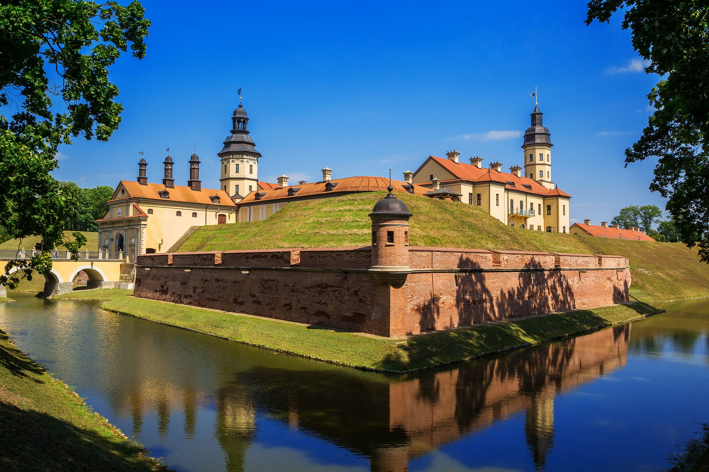

Historyczna miejscowość na Białorusi

Woranów (biał. Воранава) jest miejscowością położoną w obwodzie grodzieńskim na zachodzie Białorusi. Stanowi centrum administracyjne rejonu woronowskiego i znajduje się niedaleko granicy z Litwą. W 2025 roku miejscowość liczyła około 5500 mieszkańców. :contentReference[oaicite:0]{index=0}
| Informacja | Dane |
|---|---|
| Państwo | Białoruś |
| Obwód | Grodzieński |
| Rejon | Woronowski |
| Liczba mieszkańców | około 5 500 |
| Położenie | Zachodnia Białoruś |
Historia Woranowa związana jest z dziejami Wielkiego Księstwa Litewskiego oraz Rzeczypospolitej Obojga Narodów. Miejscowość należała do znanych rodów szlacheckich, między innymi Goštautów i Scipio del Campo. W XVIII wieku działało tutaj kolegium pijarskie. :contentReference[oaicite:1]{index=1}
Po III rozbiorze Polski w 1795 roku Woranów znalazł się w granicach Imperium Rosyjskiego. W latach 1921–1939 należał do II Rzeczypospolitej. Podczas II wojny światowej miejscowość była kolejno zajmowana przez Związek Radziecki i Niemcy. :contentReference[oaicite:2]{index=2}
Obecnie Woranów jest spokojnym centrum administracyjnym regionu, zachowującym ślady swojej wielokulturowej historii.
Mieszkańcy Woranowa to głównie Białorusini, jednak przez stulecia miejscowość zamieszkiwali również Polacy, Litwini oraz społeczność żydowska. Wielokulturowy charakter regionu pozostawił ślady w lokalnej kulturze i architekturze. :contentReference[oaicite:3]{index=3}
| Okres | Charakterystyka |
|---|---|
| XIX wiek | Rozwój jako lokalnego ośrodka administracyjnego. |
| Początek XX wieku | Znaczna społeczność żydowska i polska. |
| Po II wojnie światowej | Zmiany ludnościowe związane z granicami państw. |
| Obecnie | Około 5,5 tysiąca mieszkańców. |